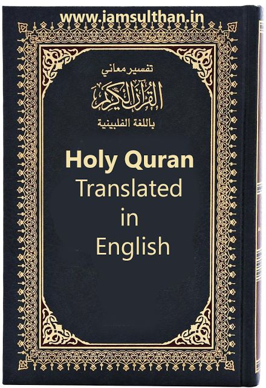
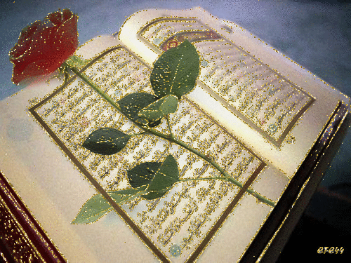

The Quran is the holy book of the Islamic world. Collected over a 23-year period during the 7th century C.E., the Quran is said to consist of Allah's revelations to the prophet Muhammad, transmitted through the angel Gabriel. Those revelations were written down by scribes as Muhammad pronounced them during his ministry, and his followers continued to recite them after his death. At the behest of the Caliph Abu Bakr, the chapters and verses were collected into a book in 632 C.E; that version of the book, written in Arabic, has been the holy book of Islam for over 13 centuries.
Islam is an Abrahamic religion, meaning that, like Christianity and Judaism, it reveres the biblical patriarch Abraham and his descendants and followers.
The Quran is divided into 114 chapters of different topics and lengths, known as surah. Each surah is made up of verses, known as ayat (or ayah). The shortest surah is Al-Kawthar, made up of only three verses; the longest is Al-Baqara, with 286 verses. The chapters are classified as Meccan or Medinan, based on whether they were written before Muhammad's pilgrimage to Mecca (Medinan), or afterward (Meccan). The 28 Medinan chapters are mainly concerned with the social life and growth of the Muslim community; the 86 Meccan deal with faith and the afterlife.The Quran is also broken into 30 equal sections, or juz'. These sections are organized so that the reader can study the Quran over the course of a month.During the month of Ramadan, Muslims are recommended to complete at least one full reading of the Quran from cover to cover. The ajiza (plural of juz') serve as a guide to accomplish that task.
The Quran is a holy book for Muslims. It is believed to be the word of God revealed to the Prophet Muhammad through the angel Gabriel over a period of 23 years. The Quran contains the teachings, laws, and guidance for Muslims to follow in their lives.
Trust God and never give up . Believe it. Any person who has to hurt other to feel powerful, is a very weak individual. Be careful who you push away. Because some of us don’t come back. God has taught me that I never need worry about tomorrow. I survived (sağ qalmışam). I’m dealing with today and with God’s help. I can face tomorrow and whatever comes my way.
Much of the world has forgotten about God.
hover
İstifadəçi onun üzərinə gələn zaman elementi seçilir və stilləndirilir.
w3schools.comaktive
Aktiv keçidi seçir və stilləndirir.
Mətn daxilində soz ve ya ifadə tələbə uyğun secilir ve stil verilir.
My Dear God has protected me more times. Thank you, God for always with me. Clean my heart lord, and take away all my pains and sadness! Amen!Amen!
Fokuslu elementi seçilir və stil verilir.